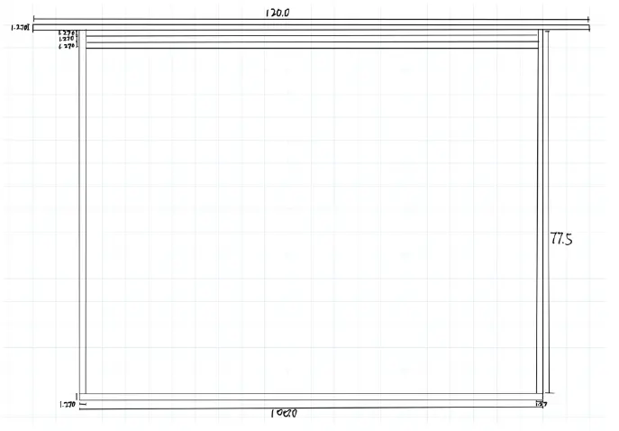
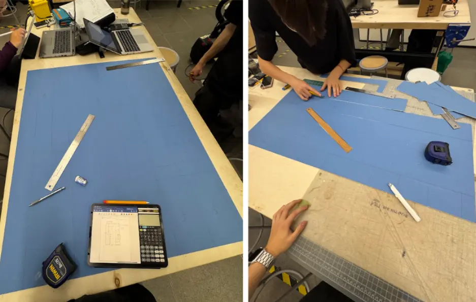
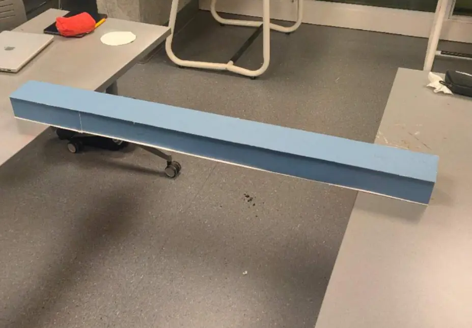
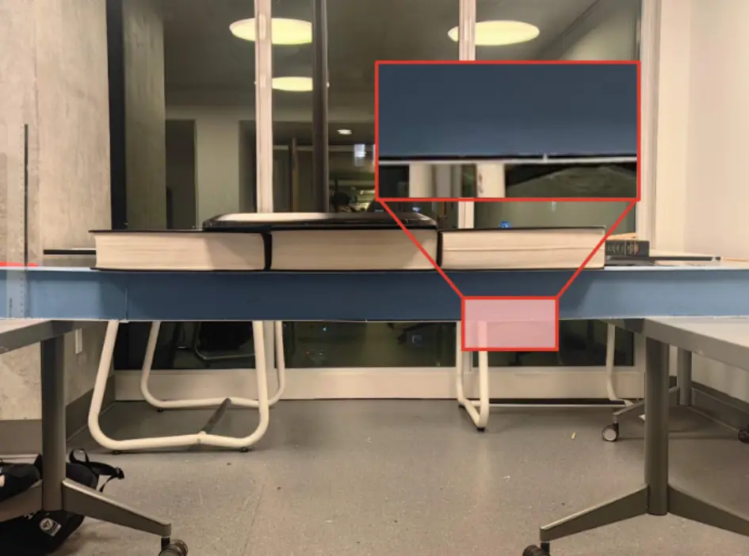
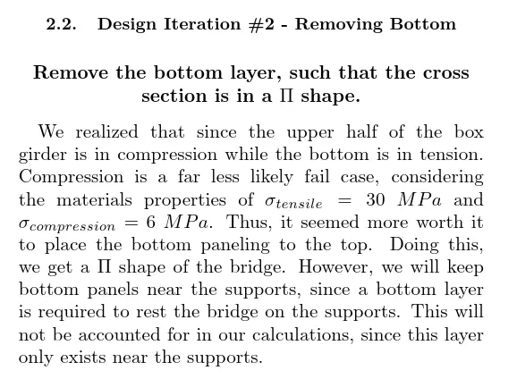
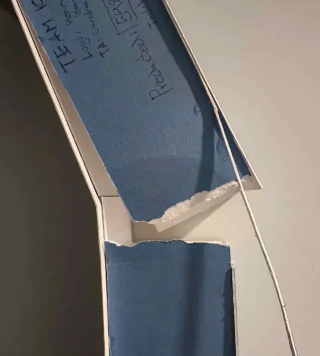

CIV102 Bridge Project
Diverging, converging, representing, then collapsing!!!
Team Credits: Alan Wang, Yeonjun KimDesign Summary One-Pager
The CIV102 (Civil Engineering) Bridge Project is a design challenge where students create a bridge out of limited matboard and adhesive materials. The design of this bridge has to withstand as much weight as possible (as simulated by a weighted train running over it from left to right). A PDF of our design report can be found here.
Our process included 7 design iterations, as we iteratively applied diverging and converging cycles. These were all done in simulation, as we lacked the materials to create accurate prototypes. The design started with a reference design of a simple box girder bridge given by the professor. [2] From there, we iteratively improved the design by adding reenforcing elements to wherever the bridge failed in simulation.

The construction of the bridge played a large role in the performance of the bridge. An image of our team cutting matboard for the bridge construction can be seen below.

While our bridge was able to pass the first load, we failed on the second load, landing us in a median position. Thus, a lot of this reflection will reflect on what we could've done better if we had performed a more rigorous engineering design process. A picture of our final product prior to breaking can be seen below:

CTMF 1: Representing using Verification Protocol
After finishing construction, we suspended the bridge over a 1-metre gap and applied some light loads before the formal test. However, because we had to use our bridge in the actual testing, we couldn't apply heavier loads for risk of breaking it. Two issues showed up in this testing.
The first was minor web buckling at the joints between web pieces — noticeable even under an estimated 20 kg. A single matboard sheet can't span the full 1,200 mm, so we had to piece sections together, but our model just assumed one continuous piece. After the project I realized this is actually warned about in the project description. [2]
The second was the soffit (bottom deck) lifting slightly near the diaphragms, from about a 1 mm height mismatch between the diaphragm and web. Neither of these showed up in our calculations and were results of poor glue application. An image with both these issues visible is shown below.

We patched both it grafting pieces over the web joints, and adding glue tabs along the soffit. However, because we couldn't apply pressure to the glue in this patch, the bridge ultimately failed in the same spots we saw issues with during testing.
Takeaways
What could've been helpful in this case was creating verification protocols as part of the represent strand of FDCR. It should've been possible to predict that our testing wouldn't be able to adequately strain our final product early on, and thus determine the need for a physical prototype to represent the design and perform proxy tests on it. In summary, establishing a verification protocol could've helped us better test the bridge before it was too late. This experience highlighted to me how important adequate representing cycles are in design, and just running simulations is not enough in many cases.
CTMF 2: Praxis Methods for Writing
Praxis I introduced me to writing-for-reading techniques such as Frame With The Claim, deductive
arrangement, and Toulmin's structure. [1]
As a team we applied these techniques to our written report.
Most intentionally, each iteration we included started with a bold centered claim. This was followed by a Toulmin structure arguing why the change was necessary.This helped communicate very efficiently. An example of our framing argument is shown below:

Takeaways
After trying the methods we learnt for engineering writing in Praxis, I found them to be very effective for framing arguments and organizing content in a clear, logical way. Since then, I feel I have been using them in my writing more often.
CTMF 3: Simulation Prototypes for Converging
Across all seven iterations, calculations were how we converged. As we couldn't use physical prototypes, we used Python scripts to compute factor-of-safety (FOS) profiles, allowing us to determine where the bridge would fail along with the failure mode.
Simulations were great for quickly iterating on our design by reinforcing whichever place the simulation told us to. In fact, we were able to finish optimizing the design in just a few days.
In the end, our final predicted failure load came out to 1,096 N, and our bridge failed at roughly one-fifth of that. This is because our simulation only took into account the failure modes possibly to calculate given our tools. While to some extent, its clear that our simulation was useful given the mode by which we failed (grafting sheer failure, see Figure below) was not one of which we calculated in the simulation, it is also a painful representation that simulations cannot capture a full picture.

Takeaways
Personally, I've had experience using simulations previously in a physics contest called IYPT where participants build experimental setups and predict results using theory. Simulations to me are a great tool for quickly iterating on a design without having to sacrifice a much larger amount of time and cost to build physical prototypes.
However, as the failure of the bridge showed me, it is not possible to rely on only one type of prototype (simulations) to iterate a design. Simulations only work so far as they are coded, and can often miss physical factors.
Effect on my Position
All CTMF two and three above share a thread of representing feeding back into the design. Our crude verification showed us issues our simulation missed (too late, and too little). The calculations and simulation let us converge on a design without wasting material. However, due to limitations with how we applied representations outside of our simulation, we were unable to succeed in this project.
Before this project, I associated representing primarily with the communication step — the report you write after, or the prototype you show a stakeholder. I now think of it more as an active design tool. The bridge showed me that representing is how you find out what you don't know yet.
The report also let me explore writing utilizing engineering communication methods, which changed my position on writing technical reports. I was able to see how helpful a structured approach could be.
References
[1] Lofgreen, J., & Carrick, R. (2026). ESC102 Lecture Slides.
[2] Bentz, E. (2025). CIV102 Bridge Design Project.
[3] Wang, A., Kim, Y., VK, L. (2025). CIV102 Bridge Design Submission.